충남대학교 컴퓨터공학과 김현수 교수님의 "소프트웨어 공학" 강의를 필기한 내용입니다.
다소 잘못된 내용과 구어적 표현 이 포함되어 있을 수 있습니다.
동적 모델링
- 시스템의 기능을 수행하기 위해 컴포넌트들이 어떻게 상호작용하는지 표현
- 시퀀스 다이어그램, 상태 다이어그램, 액티비티 다이어그램이 있댄다
시퀀스 다이어그램
- 컴포넌트간 메세지(데이터?) 교환 과정을 순서대로 시각화하여 나타낸 것
- 유스케이스 단위로 Initial Class Diagram(지난번에 그렸던 그거)로부터 작성한다
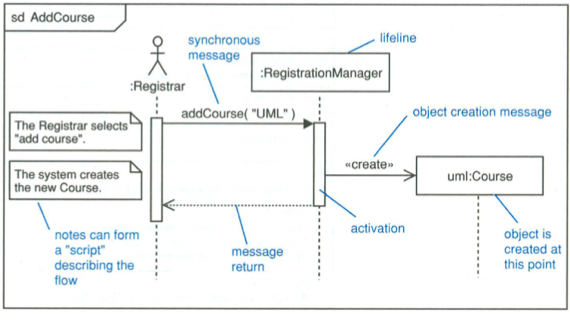
- 일단 보면 뭔가 많이 익숙한 그림일거임
- 왼쪽 위에 Initiating Actor가 위치하고
- 박스 안에 객체이름:클래스이름 이렇게 되어있는 게 하나의 객체 표현법인데
- 먼저 중요한 개념은 세로축이 시간흐름이고 세로축으로 그려진 길다란 박스가 Activation Box라고 해서 해당 객체가 활성화되어있는 기간이라는 것이다
- 이것만 봐도 어떤 느낌인지 알것제? 세로축 시간흐름대로 객체들이 메세지를 주고 받는 것을 화살표로 표시하고 어떤 작업을 하느라 객체가 활성화되어 있는 기간이 세로방향 박스인 것
- 실선 → 은 Synchronous message 로 메세지 이름과, 괄호에 매개변수가 드간다
- 보통 메세지 이름은 메소드의 이름이나 Signal이 드간다
- 아니면 객체의 생성을 나타내기 위해
<<create>>라는 메세지를 붙일 수도 있다
- 점선 → 은 이제 값을 리턴하는 것을 의미함
- 세로 실선은 Life Line 이라고 하는데 이게 객체가 살아있는 기간인 것 - 활성화랑 다르다! 생성과 동시에 Life Line 이 생기고 소멸되면 이게 끊기는 것
- 실선 → 은 Synchronous message 로 메세지 이름과, 괄호에 매개변수가 드간다
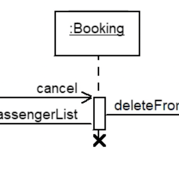
- 객체가 소멸되면 이 그림처럼
X를 적어주고 Life Line 이 더이상 이어지지 않는다
사례
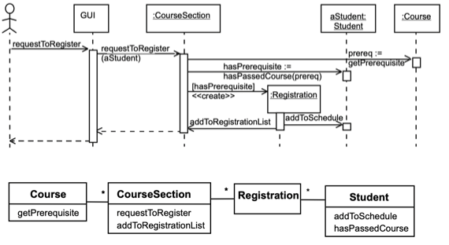
- 수강신청 예시임
- 여기서 알아야 할 것은
- return message를 생략하고 화살표 위에
반환값 :=라고 적어주기도 한다는 것과 - 화살표 위에
[조건]의 형태로 조건부 메세지를 적어줄 수도 있다 - Guard Message 라고 하더라
Combined fragments
- Combined fragments는 약간 확장판같은거임
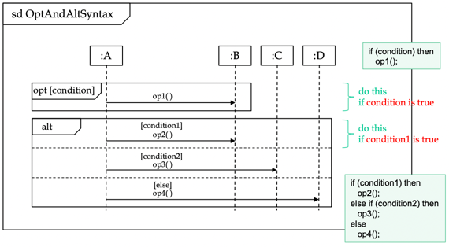
- 먼저 조건부 메세지의 경우에는 메세지가 날아가는 구역에
opt[조건]의 형태로 제목을 붙이고 박스로 감싸면 된다 - 즉, 위의 그림에서 condition을 만족하면 op1() 메세지가 날아가는 것
- 그리고 택 1의 경우에는 그 구역을 alt로 제목을 붙여 박스로 감싼다
- 위의 그림에서는 condition1이 맞으면 op2, condition2가 맞으면 op3가 날라가는 식
- 옆에 코드로 작성된거 보면 단번에 이해 가능
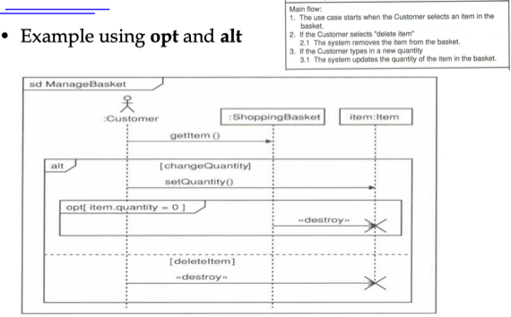
- 예시임
- 이걸 수도코드로 적어보면 이렇게된다
if changeQuantity {
setQuantity()
}
if item.quantity == 0 {
delete item
} else if deleteItem {
delete item
}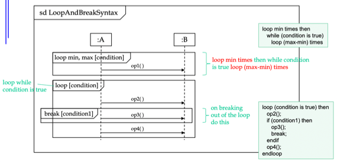
- 반복문은 위처럼 표현된다
loop min, max[condition]으로 최소 반복횟수와 조건을 만족했을 시에 최대 반복 횟수를 정해줄 수 있고- 아니면
loop[condition]으로 조건을 만족하는 와중에 반복하다가break[condition]으로 빠져나올 수도 있다
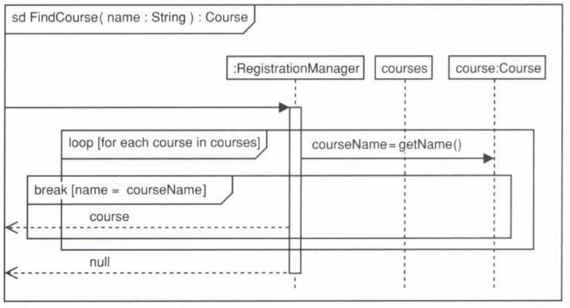
- 이건 이렇게 할 수 있다
func FindCourse(name string) Course {
for course := range courses {
courseName := getName();
if name == courseName {
return course;
}
}
return null;
}상태 다이어그램
- 얘는 쉽다 - Finite State Automata 생각하면 됨 - 상태 Node와 전이 Arc로 표현된 다이어그램
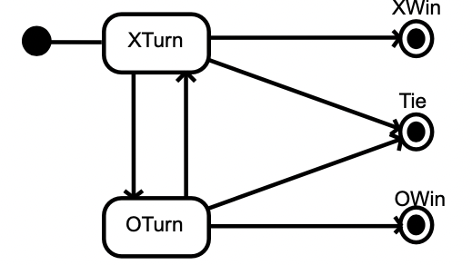
- 검은점이 시작상태 사각형이 중간상태 원 두개가 종료상태
- 그리고 위 그림에는 안나와있지만 각 Arc에 전이(트랜지션, Transition) 조건이 붙는다
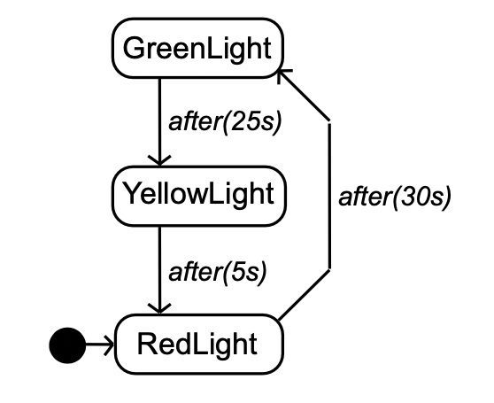
- Transition의 경우에는 시간개념 없이 바로 일어나는게 원칙이지만 위처럼 ()를 통해 걸리는 시간을 명시할 수 있고 이런걸 결과 시간 표시 트랜지션이라고 한댄다
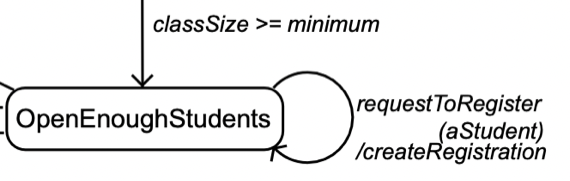
- 그리고 Transition은 그냥 적는 경우가 일반적이지만 위처럼 Boolean operator를 이용하여 적기도 한댄다
Activity
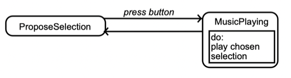
- Activity는 해당 상태에 머물면서 하게 되는 일이다
- 일정 시간이 소요되고
- 끝난 후에 Transition이 일어나거나 끝나기 전에 외부의 Interrupt에 의해 Transition이 될 수도 있다
- 위 그림처럼 상태 안에 또 다른 박스를 그리고 do: 키워드를 달아주면 됨
Action
- 얘는 시간 지연 거의 없이 바로 일어날 수 있는 동작이다
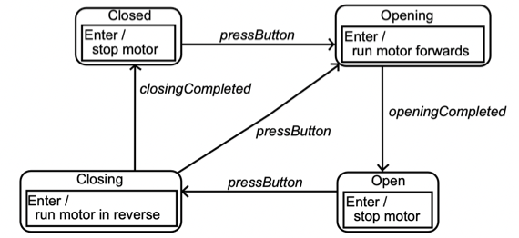
- 일단 첫번째 종류는 Enter / Exit of State Event Listener라고 생각하면 된다 - 해당 노드에 방문했을때 Trigger되거나 해당 노드에서 빠져나왔을 때 Trigger되는 것
- 저렇게 상태 안의 박스 안에
Enter /혹은Exit /을 달면 된다
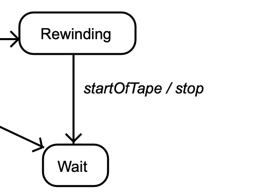
- 그리고 이거처럼
event / action을 통해 Transition이 일어날때 수행되는 Action을 명시할 수 있다
Nested State, Guard Condition
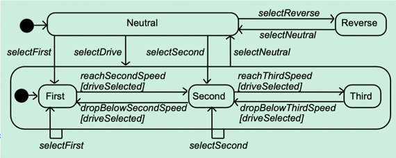
- 상태 안에 또 다른 상태를 두는 Nested state가 가능하다
- 이때는 외부상태에서 내부 상태로 바로 들어오거나 나갈 수 있고
- Wrapping State로 Transition되면 State내에 위치한 Starting State에서부터 시작하게 된다
- 그리고
[조건]을 통해 조건부 Transition을 표현할 수 있다
Example
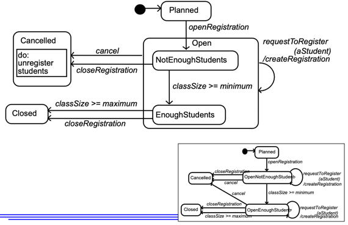
- 일단 Planned에서
- 최소수강인원보다 적으면 OpenNotEnoughStudent 상태고
- 많아지면 OpenEnoughStudent 로 갔다가
- 꽉 차거나 Enough한 상태에서 닫으면 Closed
- 취소하거나 NotEnough한 상태에서 닫으면 Cancelled로 가는 다이어그램이고
- 이걸 Open을 하나로 묶어 Nested State를 이용해 좀 더 간결하게 표현한 것이다
Activity Diagram
- Activity Diagram은 상태 다이어그램과 유사하나 상태 다이어그램의 경우에는 Event가 발생하면 Transition이 Trigger되었지만 Activity Diagram의 경우에는 외부 Event가 아닌 Activity가 종료되는 것에 Transition이 Trigger되는 차이점이 있다
- 그래서 State가 Activity로 바뀐다는 것 외에는 State Diagram의 문법을 그대로 사용한다
- 그 외에 Decision Point라는게 있는데 이건 다이아몬드로 표현되어 하나 이상의 진입 트랜지션에 대해 두개 이상의 진출 트랜지션을 갖는 분기적인 Activity이다
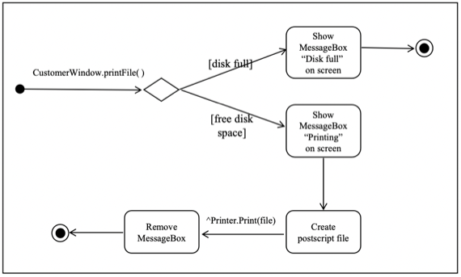
- 이것처럼 다이아몬드와
[]로 분기를 표현하게 되는데 - 여기서 못보던거는
^표시는 외부 객체를 나타내는 표시이다 -^Class.method()이래하면 외부에 있는 Class의 method()를 실행시키라는 메세지가 되는 것
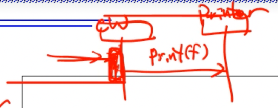
- 시퀀스 다이어그램에서는 위처럼 표현이 된다
- 액티비티 다이어그램은 시퀀스 다이어그램에서의 세로바 하나의 작동 과정에 대해 그리게 된다
병행처리
- 액티비티 다이어그램은 병행처리를 나타내는데 효과적이다
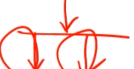
- Fork: 하나의 입력 트랜시션이 여러개의 출력 트랜지션으로 갈라지는 경우
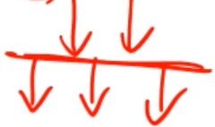
- Rendezvous : 여러개의 입력 트랜지션이 다 들어온 후에 여러개의 출력 트랜지션으로 갈라지는 경우
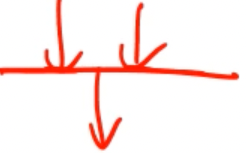
- Join : 여러개의 입력 트랜지션이 하나의 출력 트랜지션으로 합쳐지는 경우
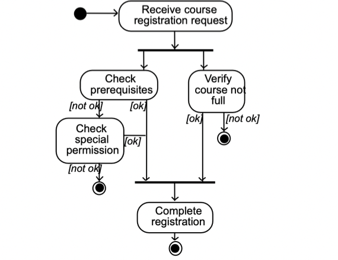
- Fork와 Join이 표현된 예시다
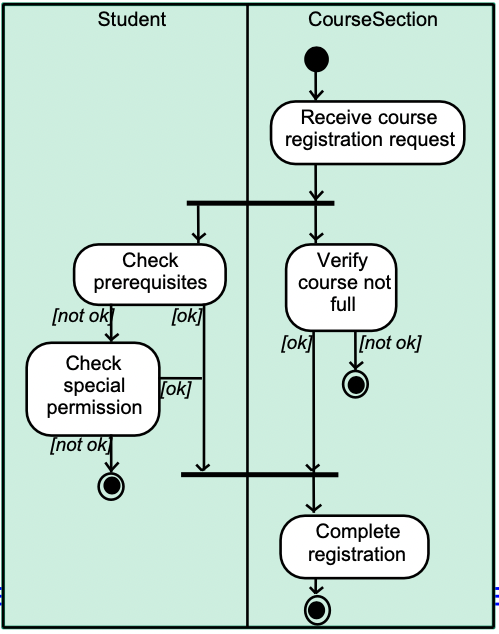
- Swimlane 이라는 것은 말 그대로 수영장에서 레인 말하는건데
- 같은 클래스와 관련된 액티비티끼리 하나의 Swimlane으로 묶은 것을 말한다
동적 모델링 프로세스
- 보통 Sequence Diagram은 전체적으로 객체들이 상호작용하는 것을 시간순대로 표현한 것이기 때문에 거의 필수적으로 그리고
- State Diagram은 객체 하나의 상태 변화를 나타내기 위해 그린다 - 근데 모든 객체가 아닌 중요하고 복잡하다고 판단되는 객체에 대해서만 그림
- 그리고 Activity Diagram은 Operation하나의 상태 변화를 나타내기 위해 그린다 - 이것도 마찬가지로 중요하고 복잡한 Operation에만 그림
- 모델링 과정을 보면
- 시나리오 준비
- 시나리오의 이벤트식별
- 시나리오별 시퀀스 다이어그램 작성
- 식별한 이벤트와 그에 따른 상태를 상태 다이어그램으로 녹여냄
- 검토
- 과정을 겪게 됨
시나리오 준비
- 생각해보면 유스케이스가 시나리오의 집합이기 때문에
- 유스케이스 모델링의 결과를 갖다 쓰면 된다
- 유스케이스에서 flow들이 각각의 시나리오가 되는 것
이벤트 식별
- 시나리오는 이벤트의 연속이라는 걸 참고해서 식별하면 됨
- 이벤트를 식별할때는 객체간 교환되는 정보들을 유심히 보면 알 수 있더라
- 이벤트의 속성은 매소드의 매개변수의 형태로 나타나고, 이벤트가 발생했음을 알리기만 하는 매개변수가 없는 신호 이벤트가 있다
- 그리고 시나리오의 이벤트를 식별할때는 외부 이벤트부터 시작하는 게 좋다
- 뭔소린고 하니 사용자나 외부 장치 등과 상호작용하는 외부 이벤트를 먼저 찾고
- 해당 이벤드가 내부 객체에 도달하는 지점에서부터 이벤트들을 식별해나가면 된다
- 이벤트를 보내고 받는 지점을 잘 생각해서 이벤트를 할당하면 되고 - 할당이라는 말이 좀 이질적인데 그냥 보내고 받는 지점을 식별해내라 정도로 생각하면 될듯
- 그리고 매개변수의 값만 다르고 비슷한 동작을 하는 경우에는 별도의 이벤트로 구성하지 말고 하나의 이벤트로 그룹화 해서 사용하면 된다
시퀀스 다이어그램 작성
- 이렇게 순서화된 시나리오를 기반으로 하나의 시퀀스 다이어그램을 작성하면 된다
상태 다이어그램 작성
- 일단 UC에서 Main flow부터 상태 다이어그램을 적기 시작한다
- 그리고 그 Main flow에 대해 시퀀스 다이어그램에서 한 열을 쭉 따라가며 입출력 이벤트를 확인하고 그것으로부터 이벤트 이름(라벨)을 도출한다
- 시퀀스 다이어그램에서 출력 이벤트는 다 지워주고 입력 이벤트만 남기면 그게 Transition이 됨
- 한 열이 의미하는 바가 결국에는 하나의 객체이기 때문에 하나의 객체에 대해 상태 다이어그램을 작성하게 되는 셈
- 그리고 그 이벤트들을 보고 반복되는 게 있다면 loop를 도입하라
- 단, 무한루프를 방지하기 위해 루프를 구성하는 상태 중 적어도 하나는 루프를 빠져나가는 출력 전이가 있어야 됨
- 이런 식으로 Main flow에 대한 상태 전이도를 그렸으면
- Alternative flow에 대해서도 고려를 해 추가해준다
- Alternative flow에서 분기하는 지점이 어느 상태인지 확인하고
- 어느 지점에서 다시 결합할 것인지 고려하랜다
- 그리고 타이밍이나 기타 오류 처리 등을 해주고
- 검토를 한 후에
- 중요한 객체에 대해 위 과정을 반복해 상태 다이어그램을 그려준다
상태 다이어그램 검토
- 누락된 이벤트가 없는 지 확인해야 한다
- 만약 이런일 이 일어났을 때 어떻게 작동하는가(what-if분석이랜다)
- 이벤트들에 대한 송수신자를 다시 확인
- 또한 선행 / 후행상태가 없는 것을 찾고 걔네가 시작 / 종료 상태인지 봐야한다 - 아니라면 문제가 있는 것
- 그리고 경쟁조건(Race Condition)에서는 이벤트가 누락될 수 있기 때문에 경쟁조건이 없는지, 혹은 경쟁조건에서 누락된 이벤트가 없는지 명확하게 확인해야한다.